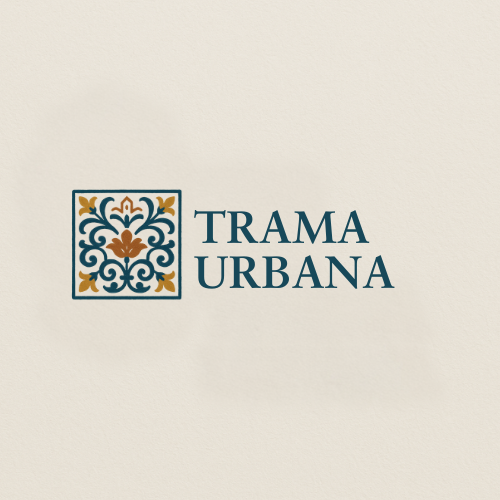

Trama Urbana
I had the opportunity to design this logo for a university project developed with my colleagues using Canva. Trama urbana is a digital publishing hous created to tell the stoires of Italian territories through their most authentic voices: those of local artisan and communities. The logo stems from a clear concept: representing the Sicilian wolrd, particulary its craftmanship. This immediately led me to the idea of majolica tiles. I chose a color palette designed to convey a sense of warmth while best representing Sicily, incorporating blue, white, and shades of orange. To capture the essence of majolica, after drawing inspiration from various ceramics, I decided to feature a floral theme. From there, I added finer details, such as the small church at the top and the delicate flower motifs.

I promessi Sposi
Questa è una copertina che ho realizzato per un progetto universitario inerente alla letteratura italiana. In questo caso si trattava di una presentazione per un esame su "I promessi Sposi". Ho usato dei toni caldi sul marrocino per dare alle slides un effetto "vintage", ho anche utilizzato anche dei preset di Canva che mi hanno dato la possibilità di inserire delle immagini di testo. Qui ho preso delle immagini di pagine del libro de "I promessi Sposi" e anche dei disegni.

Fico d'India
Questa è una slide di un progetto che ho realizzato insieme a mio fratello per la sua scuola, dove l'idea di base era quella di realizzare una ricetta con un cibo tipico del proprio territorio ed in questo caso il fico d'india. Utilizzando le immagini e i ritagli forniti da Canva ho creato questa slide cercando di rendere il tutto equilibrato e uniforme. Per i colori ho deciso di utlizzare delle tonalità che rappresentassero la terra e il frutto, mentre per dare contrasto ho deciso di utilizzare delle immagini un pò più colorate per rendere tutto più armonioso